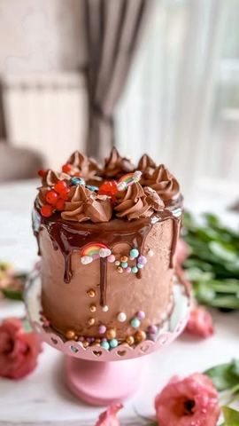

Moja beleška
SačuvanoSastojci
- Fil
- Kore ( 6 kora prečnika 20cm)
Priprema
Na početku - bilo bi jako zgodno da imate dva pleha prečnika 20 cm i da, oba staju u isto vreme u rernu, pa tako skraćujete vreme pečenja i olakšavate sebi. Dobro ste pročitali - imaćete 7 belanaca viška (od njih možete napraviti puslice za dekoraciju 🤗) Ali je jako bitno da je količina fila ovolika kako bi torta bila dovoljno sočna 😍 Prvo pravimo fil: Mutimo žumanca sa šećerom dok se kristali potpuno ne otope i smesa ne posvetili, a onda ga kuvamo na pari. Kada voda proključa u šerpici ispod posude u kojoj je fil, biće vam potrebno sigurno nekih 15ak min kuvanja, primetićete, kada fil počne polako da se steže po ivicama činije i da se zgušnjava, spreman je. U tako vreo dodajete iseckanu crnu čokoladu, izmutite mikserom i odmah prebacite providnu foliju direktno na površinu fila. Ostavite ga da se potpuno prohladi, a onda u hladan dodate umućen puter, sjedinite i spreman je! Kore - pekla sam 4 belanca sa 80 gr šećera, 100 gr oraha i 20 gr brašna - pa delila u dva jednaka kalupa prečnika 20cm. Umutim belanca u čvrst sne, dodam šećer, umutim dok smesa ne postane potpuno kremasta, pa dodam brašno i orahe i povežem lagano. Peku se na 220C nekih 12-15 min (zavisi od jačine rerne) Kada su kore prohladjene i fil, u kalup redjajte kora-fil, tako što ćete završiti sa korom. Količinu fila delite na 5 kora ❤️ Obavezno neka ostane preko noći u frižideru, a onda je dekorišete po ukusu. Ako želite ispisaću vam i kako sam ja to uradila 😍
Originalni opis sa Instagrama
Reforma torta 🎂🙌🏻 Kraljica torta, bukvalno. 🙌🏻 Ovaj fil kuvan na pari, meni je ovo neodoljivo. Iako nisam tip koji voli orahe, ovde ih ne osećam u tom smislu i ova torta mi je asocijacija dečije rodjendane iz perioda kad smo mi bili mali. Ukus osetim na nepcima onog momenta kad se setim nekih trenutaka.. 🥹 Tortica koju sam ja pravila ima nekih 2kg, standardna veličina i kako je zaista jaka, vrlo je izdašna iako deluje malecko. Fil: •19 žumanaca •300 gr šećera •150 gr crne čokolade •220 gr putera Kore ( 6 kora prečnika 20cm): •12 belanaca •240 gr šećera •300 gr oraha •60 gr brašna Na početku - bilo bi jako zgodno da imate dva pleha prečnika 20 cm i da, oba staju u isto vreme u rernu, pa tako skraćujete vreme pečenja i olakšavate sebi. Dobro ste pročitali - imaćete 7 belanaca viška (od njih možete napraviti puslice za dekoraciju 🤗) Ali je jako bitno da je količina fila ovolika kako bi torta bila dovoljno sočna 😍 Prvo pravimo fil: Mutimo žumanca sa šećerom dok se kristali potpuno ne otope i smesa ne posvetili, a onda ga kuvamo na pari. Kada voda proključa u šerpici ispod posude u kojoj je fil, biće vam potrebno sigurno nekih 15ak min kuvanja, primetićete, kada fil počne polako da se steže po ivicama činije i da se zgušnjava, spreman je. U tako vreo dodajete iseckanu crnu čokoladu, izmutite mikserom i odmah prebacite providnu foliju direktno na površinu fila. Ostavite ga da se potpuno prohladi, a onda u hladan dodate umućen puter, sjedinite i spreman je! Kore - pekla sam 4 belanca sa 80 gr šećera, 100 gr oraha i 20 gr brašna - pa delila u dva jednaka kalupa prečnika 20cm. Umutim belanca u čvrst sne, dodam šećer, umutim dok smesa ne postane potpuno kremasta, pa dodam brašno i orahe i povežem lagano. Peku se na 220C nekih 12-15 min (zavisi od jačine rerne) Kada su kore prohladjene i fil, u kalup redjajte kora-fil, tako što ćete završiti sa korom. Količinu fila delite na 5 kora ❤️ Obavezno neka ostane preko noći u frižideru, a onda je dekorišete po ukusu. Ako želite ispisaću vam i kako sam ja to uradila 😍 • • • #reforma #torta #domacetorte #ukusnahrana #mojirecepti #slatkisi